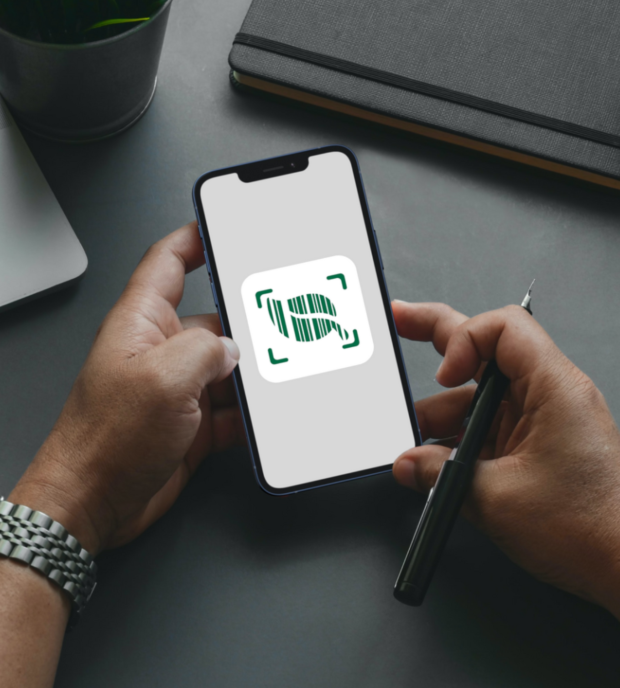
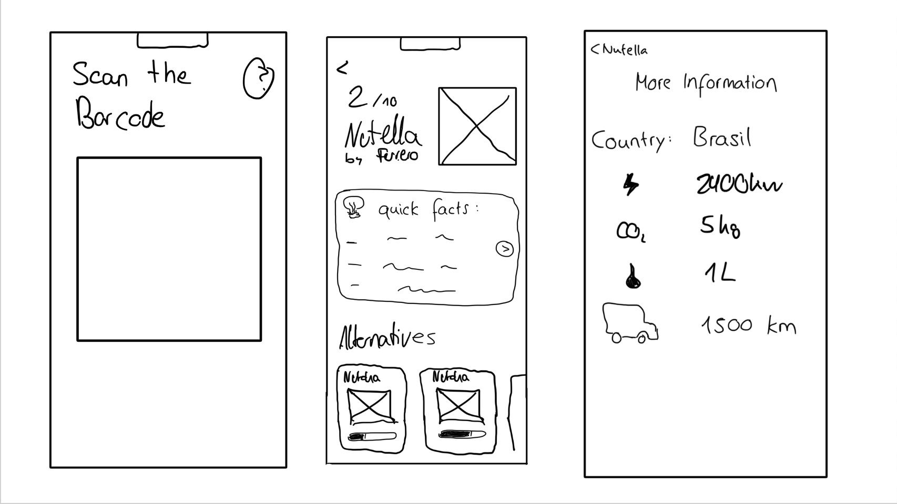
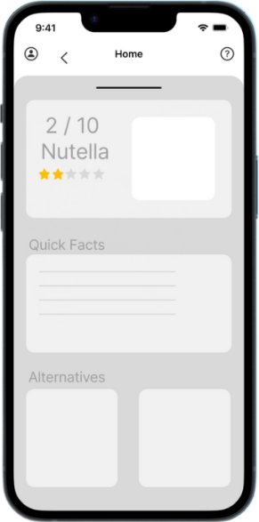
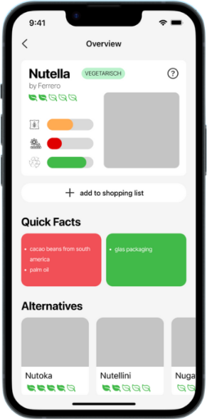
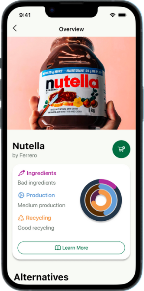
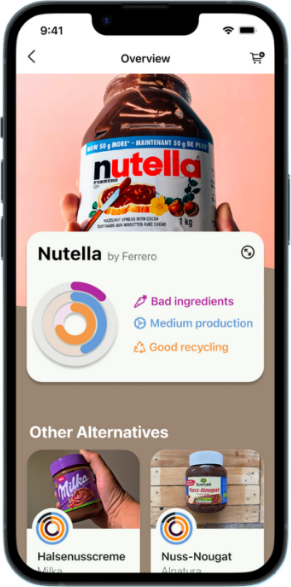
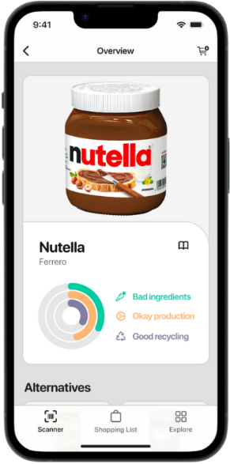
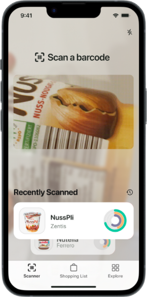
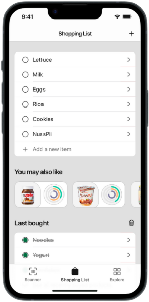
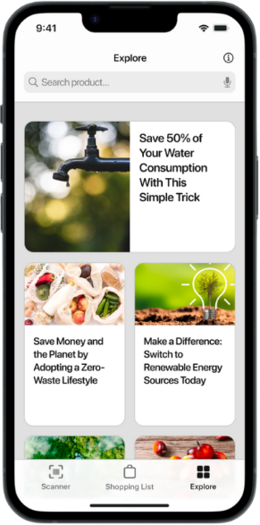

SustainAppility
2025Nachhaltigkeit auf einen Scan: eine App, die per Barcode zeigt, wie ein Produkt wirklich abschneidet — und welche Alternative besser ist.

- Rolle
- UI/UX-Design, Prototyping
- Team
- 6 Personen — GreenPenguin
- Kontext
- Studienprojekt, HdM Stuttgart
- Werkzeuge
- Figma · Crazy 8's · User Testing
Wir wollen Menschen zu mehr Umweltbewusstsein verhelfen — indem sie klimaschädliche Produkte vermeiden und nachhaltiger einkaufen.
Team GreenPenguin
Vom Regal zur Entscheidung — in wenigen Sekunden
In einem Team von sechs Personen haben wir das Interface einer mobilen App entworfen, mit der sich Produkte scannen, ihre Nachhaltigkeit einsehen und direkt mit Alternativen vergleichen lassen. Wir haben dabei den kompletten Design-Prozess durchlaufen — von User Research über Sketching und Wireframes bis zum interaktiven High-Fidelity-Prototyp.
Mein Anteil lag im Interface-Design und im Prototyping: Screens, Komponenten, Zustände und die Verknüpfung zu einem klickbaren Ganzen.
Crazy 8's
Wir starteten mit mehreren Runden der „Crazy 8's“-Methode: acht Minuten, acht spontane Screens — pro Person. Anschließend haben wir die Skizzen gemeinsam bewertet und entschieden, welche Ideen wir weiterverfolgen.

Der Main Screen, fünf Mal gedacht
Mit Nutzertests und Feedback haben wir das Design Schritt für Schritt geschärft. Hier siehst du die Entwicklung des Hauptbildschirms — von der ersten groben Fassung bis zum finalen Design.





Die finalen Screens


